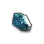
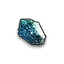

| Name | Item Level | Description |
|---|---|---|
|
Alchemy Research Building Key |
0 | The key to Mergoda District's "Alchemy Research Building". A pattern imitating the eyeball is engraved |
|
Ancient Deenan Key |
0 | A magnificent panel-shaped key in which the design of the big tree was carved. It seems that it was used to lock quite a large door. |
|
Broken key of the Sealed Palace |
0 | The key of the Palace where Diamantes was sealed. It needs to be restored with alchemy. |
|
Dreed Chapel Key |
0 | The key to a "chapel" somewhere in Dreed Castle. It has been managed by the Order. |
|
Diamantes' Vessel of Life |
0 | Diamantes Life Vessel. Its mighty power can shake the fate of Lestania. |
|
Fully Blocked Door Key |
0 | Event Blocked Item. Only used Server-Side. |
|
Key to Gardnox Fortress' Front Gate |
0 | Gardnock Fortress' huge key. It seems to open the main gate of the fort. |
|
Kieshildt's Vessel of Life |
0 | The legendary Vessel of Life. Seems to be filled with light. |
|
Leader's Room Key |
0 | The key to the "Military leaders' room". It might be usable somewhere in this building. |
|
Lake Cera Detached Pavillion Key |
0 | A key to the Temple of Purification, located across Lake Cera. It is engraved with the White Dragon. |
|
Mysterious Ancient Texts |
0 | An esoteric document of considerable age. Ancient words written with complicated figures, too damaged to read. |
|
Riftstone Ore  |
0 | Mysterious crystals that are found in the Rift. Used to sign a contract with a new Pawn. |
|
Special Research Area Gold Key |
0 | The key to the Mergoda District's "Special Research District". A symbol is engraved, reminiscent of large rocks. |
|
Supplies for the Fort |
0 | Materials prepared to reinforce Gritten Fort. Deliver this to Lieutenant Vanessa. |
|
Vessel of Life |
0 | Ancient relics from Dreed Castle's that had been kept underground Strikingly similar to various relics that demons have. |
|
Vessel of Life |
0 | The Vessel of Life created by Theodore. Used to accomodate Diamantes. |
|
Water Flow Control Room Key |
0 | A key to the "Water Flow Control Room" in the Temple of Purification. Draconic markings are apparent. |
|
Zuhl's Vessel of Life |
0 | The Vessel of Life corrupted by Zuhl. It is pulsating with a violent red glow. |